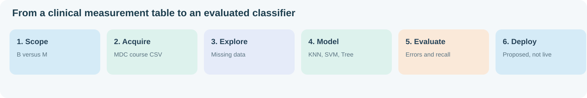
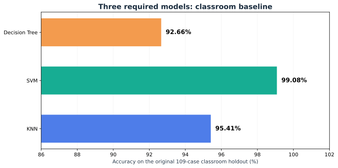
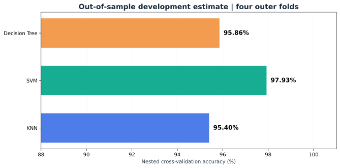
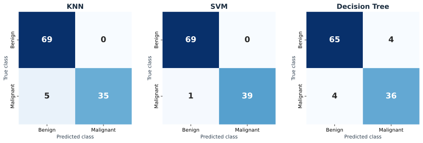
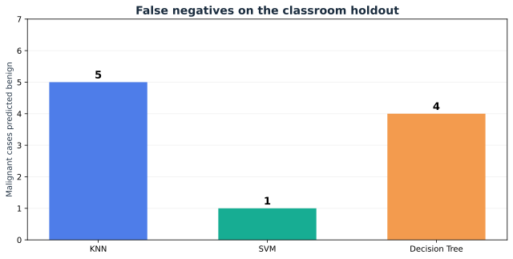

An interactive learning lab for understanding why accuracy alone is not enough. I compare KNN, SVM and Decision Tree on the same 109 test observations, then examine how that performance changes during independent validation.
Rows show the actual label. Columns show what the algorithm predicted.
Green cells are correct predictions. Orange cells represent classification errors. B means benign and M means malignant.

This comparison is limited to the three required classroom models. Optional research models appear separately in the notebooks.




When a classifier makes 108 correct predictions out of 109 observations, the result is impressive for that particular split. But that does not establish a 99% success rate under future conditions. The research notebook uses nested validation to estimate performance more carefully.
My conclusion: SVM provides the strongest result for the three algorithms assigned in class. I also report its limitations, identify the consequences of false negatives, and separate the required work from additional methodological research.
Open course notebook · Open research notebook · Presentation guide